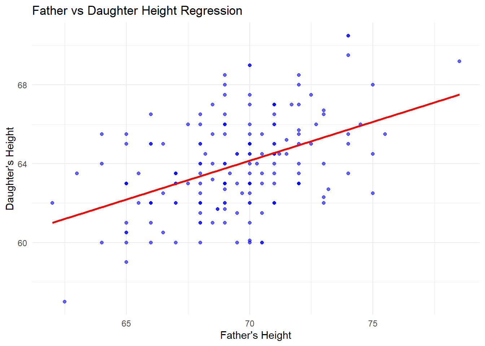
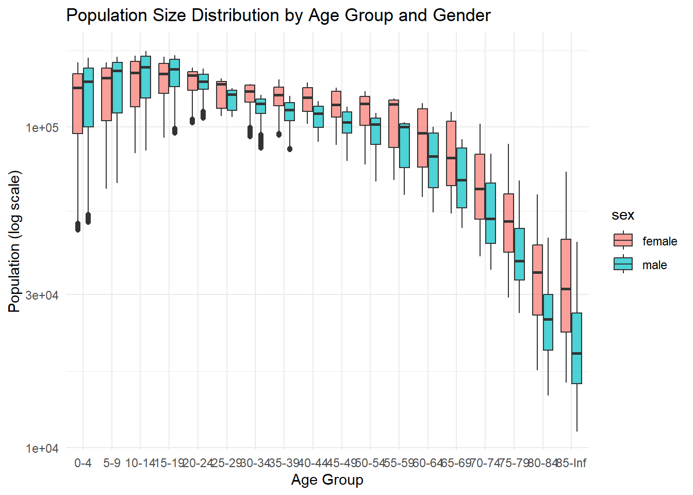
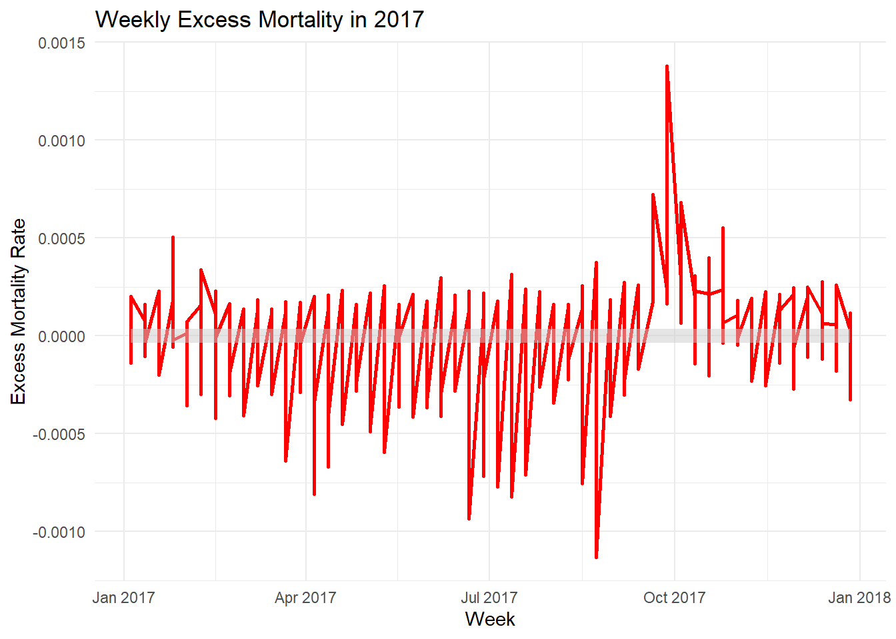

Load the HistData package. Create a galton_height data with the father’s height and one randomly selected daughter from each family. Exclude families with no female children. Set the seed at 2007 and use the function sample_n to select the random child. You should end up with a heights dataset with two columns: father and daughter.
library(HistData)
Warning: package 'HistData' was built under R version 4.4.3
library(dplyr)
Attaching package: 'dplyr'
The following objects are masked from 'package:stats':
filter, lag
The following objects are masked from 'package:base':
intersect, setdiff, setequal, union
Estimate the intercept and slope of the regression line for predicting daughter height \(Y\) using father height \(X\). Use the following regression line formula:
Make a plot to confirm the regression line goes through the data.
library(ggplot2)ggplot(heights, aes(x = father, y = daughter)) +geom_point(color ="blue", alpha =0.6) +geom_smooth(method ="lm", color ="red", se =FALSE) +labs(title ="Father vs Daughter Height Regression",x ="Father's Height",y ="Daughter's Height") +theme_minimal()
`geom_smooth()` using formula = 'y ~ x'

Recompute the slope and intercept coefficients, this time using lm and confirm you get the same answer as with the formula used in problem 2.
# Calculate the regression model using lm()model <-lm(daughter ~ father, data = heights)# Output the regression coefficientssummary(model)
Call:
lm(formula = daughter ~ father, data = heights)
Residuals:
Min 1Q Median 3Q Max
-4.3549 -1.5929 -0.1371 1.4937 4.8422
Coefficients:
Estimate Std. Error t value Pr(>|t|)
(Intercept) 36.56251 4.09418 8.930 5.91e-16 ***
father 0.39422 0.05893 6.689 2.95e-10 ***
---
Signif. codes: 0 '***' 0.001 '**' 0.01 '*' 0.05 '.' 0.1 ' ' 1
Residual standard error: 2.13 on 174 degrees of freedom
Multiple R-squared: 0.2046, Adjusted R-squared: 0.2
F-statistic: 44.75 on 1 and 174 DF, p-value: 2.948e-10
beta_0_lm <-coef(model)[1] beta_1_lm <-coef(model)[2] cat("Intercept (β0) from lm():", beta_0_lm, "\n")
Intercept (β0) from lm(): 36.56251
cat("Slope (β1) from lm():", beta_1_lm, "\n")
Slope (β1) from lm(): 0.394218
Note that the interpretation of the intercept is: the height prediction for the daughter whose father is 0 inches tall. This is not a very useful interpretation. Re-run the regression but instead of father height use inches above average for each father: instead of using the \(x_i\)s use \(x_i - \bar{x}\). What is the interpretation of the intercept now? Does the slope estimate change?
heights <- heights %>%mutate(father_centered = father -mean(father))model_centered <-lm(daughter ~ father_centered, data = heights)summary(model_centered)
Call:
lm(formula = daughter ~ father_centered, data = heights)
Residuals:
Min 1Q Median 3Q Max
-4.3549 -1.5929 -0.1371 1.4937 4.8422
Coefficients:
Estimate Std. Error t value Pr(>|t|)
(Intercept) 63.92841 0.16052 398.258 < 2e-16 ***
father_centered 0.39422 0.05893 6.689 2.95e-10 ***
---
Signif. codes: 0 '***' 0.001 '**' 0.01 '*' 0.05 '.' 0.1 ' ' 1
Residual standard error: 2.13 on 174 degrees of freedom
Multiple R-squared: 0.2046, Adjusted R-squared: 0.2
F-statistic: 44.75 on 1 and 174 DF, p-value: 2.948e-10
beta_0_centered <-coef(model_centered)[1] beta_1_centered <-coef(model_centered)[2] cat("Intercept (β0) with centered father heights:", beta_0_centered, "\n")
Intercept (β0) with centered father heights: 63.92841
cat("Slope (β1) with centered father heights:", beta_1_centered, "\n")
Slope (β1) with centered father heights: 0.394218
When using the centered father heights as a predictor, is the intercept the same as the average daughter height? Check if this is the case with the values you computed and then show that mathematically this has to be the case.
Define an object counts by wrangling puerto_rico_counts to 1) include data only from 2002-2017 and counts for people 60 or over. We will focus in this older subset throughout the rest of the problem set.
library(excessmort)
Warning: package 'excessmort' was built under R version 4.4.3
library(dplyr)library(lubridate)
Attaching package: 'lubridate'
The following objects are masked from 'package:base':
date, intersect, setdiff, union
head(puerto_rico_counts)
agegroup date sex population outcome
1 0-4 1985-01-01 female 158843.0 2
2 0-4 1985-01-01 male 164476.6 0
3 0-4 1985-01-02 female 158837.8 0
4 0-4 1985-01-02 male 164471.2 0
5 0-4 1985-01-03 female 158832.6 1
6 0-4 1985-01-03 male 164465.9 0
agegroup date sex population outcome year
1 60-64 2002-01-01 female 89850.74 3 2002
2 60-64 2002-01-01 male 76586.25 4 2002
3 60-64 2002-01-02 female 89858.23 3 2002
4 60-64 2002-01-02 male 76591.41 7 2002
5 60-64 2002-01-03 female 89865.73 1 2002
6 60-64 2002-01-03 male 76596.58 2 2002
Use R to determine what day of the week María made landfall in PR (September 20, 2017).
landfall_date <-as.Date("2017-09-20")day_of_week <-weekdays(landfall_date)cat("Hurricane Maria made landfall in Puerto Rico on a", day_of_week, "\n")
Hurricane Maria made landfall in Puerto Rico on a Wednesday
Redefine the date column to be the start of the week that date is part of: in other words, round the date down to the nearest week. Use the day of the week María made landfall as the first day. So, for example, 2017-09-20, 2017-09-21, 2017-09-22 should all be rounded down to 2017-09-20, while 2017-09-19 should be rounded down to 2017-09-13. Save the resulting table in weekly_counts.
agegroup date sex population outcome year week_start
1 0-4 1985-01-01 female 158843.0 2 1985 1984-12-26
2 0-4 1985-01-01 male 164476.6 0 1985 1984-12-26
3 0-4 1985-01-02 female 158837.8 0 1985 1985-01-02
4 0-4 1985-01-02 male 164471.2 0 1985 1985-01-02
5 0-4 1985-01-03 female 158832.6 1 1985 1985-01-02
6 0-4 1985-01-03 male 164465.9 0 1985 1985-01-02
Now collapse the weekly_count data frame to store only one mortality value for each week, for each sex and agegroup. To this by by redefining outcome to have the total deaths that week for each sex and agegroup. Remove weeks that have less the 7 days of data. Finally, add a column with the MMWR week. Name the resulting data frame weekly_counts.
library(MMWRweek)
Warning: package 'MMWRweek' was built under R version 4.4.3
Comparing mortality totals is often unfair because the two groups begin compared have different population sizes. It is particularly important we consider rates rather than totals in this dataset because the demographics in Puerto Rico changed dramatically in the last 20 years. To see this use puerto_rico_counts to plot the population sizes by age group and gender. Provide a two sentence description of what you see.
library(ggplot2)library(dplyr)puerto_rico_counts %>%ggplot(aes(x = agegroup, y = population, fill = sex)) +geom_boxplot(alpha =0.7) +scale_y_log10() +labs(title ="Population Size Distribution by Age Group and Gender",x ="Age Group",y ="Population (log scale)") +theme_minimal()

Make a boxplot for each MMWR week’s mortality rate based on the 2002-2016 data. Each week has 15 data points, one for each year. Then add the 2017 data as red points.
The plot made in 14 explains why 2017 is below what is expected: there appears to be a general decrease in mortality with time. A possible explanation is that medical care is improving and people are living more healthy lives.
Fit a linear model to the weekly data for the 65 and older to the 2002-2016 data that accounts for:
Now obtain expected counts for the entire dataset, including 2017. Compute the difference between the observed count and expected count and plot the total excess death for each week. Construct a confidence interval for the excess mortality estimate for each week. Hint: use the predict function.
Warning: Using `size` aesthetic for lines was deprecated in ggplot2 3.4.0.
ℹ Please use `linewidth` instead.

Finally, plot the observed rates and predicted rates from the model for each agegroup and sex. Comment on how well the model fits and what you might do differently.